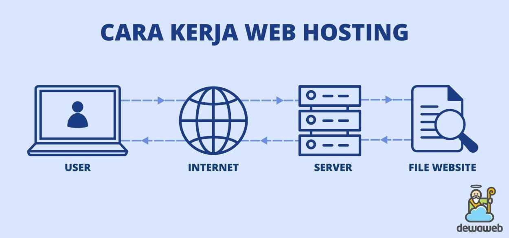
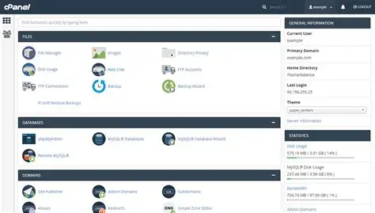

Rangkuman Materi
Pengantar Hosting
control panel hosting adalah platform atau tool yang menyediakan berbagai fitur untuk mengelola dan mengontrol hal-hal terkait web hosting.
Platform ini menyediakan interface yang user-friendly, memudahkan pengguna untuk melakukan hal-hal seperti mengelola domain, menambahkan subdomain, membuat email berbasis domain, memodifikasi database, serta membackup website
Cara Kerja Hosting

Server hosting memproses permintaan tersebut dan mengirimkan semua file yang dibutuhkan (seperti HTML, gambar, dan script) kembali ke browser pengguna.
Browser kemudian merender file-file tersebut menjadi halaman web yang dapat dilihat oleh pengguna
Monitoring Sumber Daya: Memantau penggunaan sumber daya server seperti CPU, RAM, dan bandwidth.
Keamanan: Mengelola fitur keamanan situs web, seperti firewall, SSL, dan memindai malware
Contoh Control Panel Hosting

cPanel: Salah satu yang paling populer di Indonesia, banyak fitur email yang komprehensif.
Plesk: Pilihan populer lainnya dengan antarmuka yang ramah pengguna.
DirectAdmin: Opsi yang lebih ringan namun tetap memiliki fitur yang kuat.
CyberPanel: Control panel berbasis Linux gratis dengan berbagai fitur, termasuk fitur keamanan dan performa.